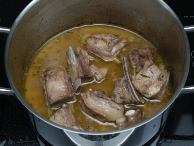

| Zutaten für 4 Personen: | |
| 800 g | Lammragout |
| 1 Zweig | Rosmarin |
| 5 | Salbeiblätter |
| 2 | Knoblauchzehen |
| 5-10 | Wacholderbeeren |
| 6 El | Olivenöl |
| 5 El | Zitronensaft |
| 1 El | Weinessig |
| Salz | |
| Pfeffer | |
| 1 Tasse | trockener Weisswein |
Marinade aus Zitronensaft, Weinessig und Olivenöl zubereiten. Gehackte Gewürzkräuter, zerdrückte Wacholderbeeren und gepressten Knoblauch beigeben. Lammstücke 3 Stunden marinieren lassen.
Das Fleisch im vorgeheizten Backofen (180°C) in zugedeckter Pfanne ca. 45 Minuten in der Marinade kochen lassen.
Wein dazugeben und offen weiter kochen lassen, bis die Flüssigkeit eingekocht und das Fleisch hellbraun ist. Beilagen: Broccoli, Bohnen.
Flugblatt eines Spezialitätenladens
Schmeckte am 13.4.2008 ausgezeichnet. RE
@LINKBACK_TAG@ @WAKELOCK@